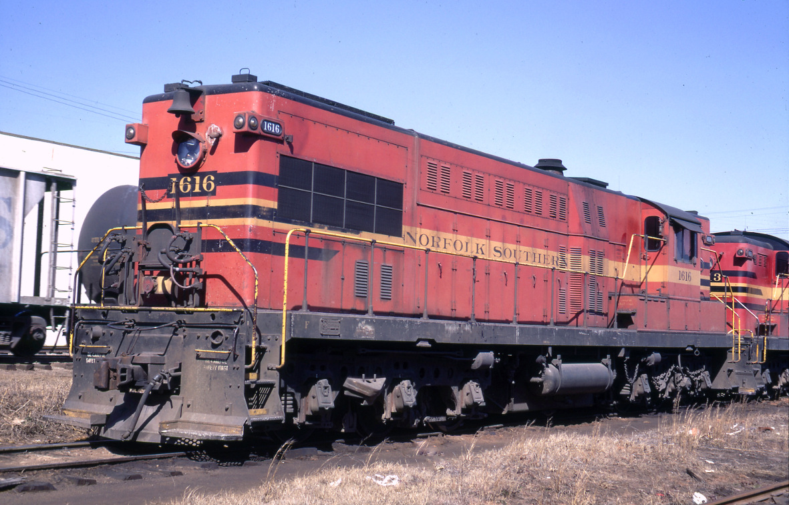

The original Norfolk & Southern Railway ran from Norfolk, VA to Charlotte, NC with various branches.

For those of you looking for information about the now present Norfolk Southern Corporation, they can be found
here.
Events
Next N & S Historical Society Annual Meeting will be held in Suffolk, VA on April 22nd 2017.
Note to people searching for Employee Records/Retirement Records/Family Genealogy:
NSHS does not have any Norfolk Southern Railway employee records. It is recommended that you contact the U.S. Railroad Retirement Board, which you can contact at 844 North Rush, Chicago, IL 60611 (312) 751-4500, or on the web at
The U.S. Railroad Retirement Board.